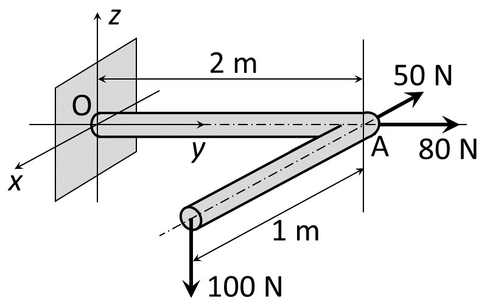
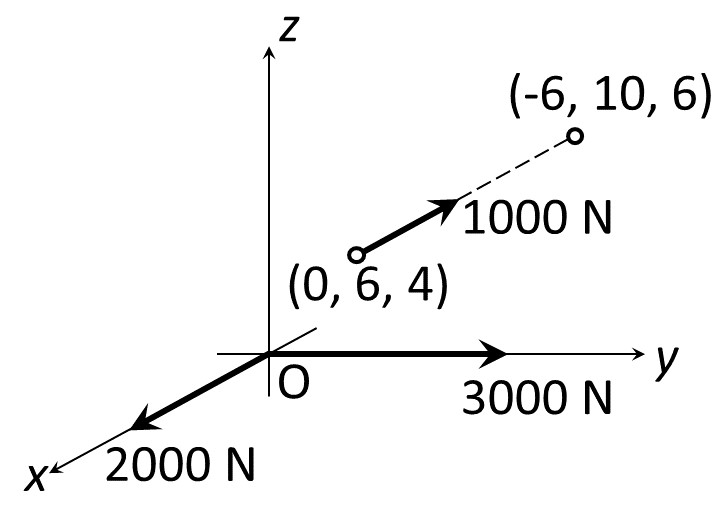
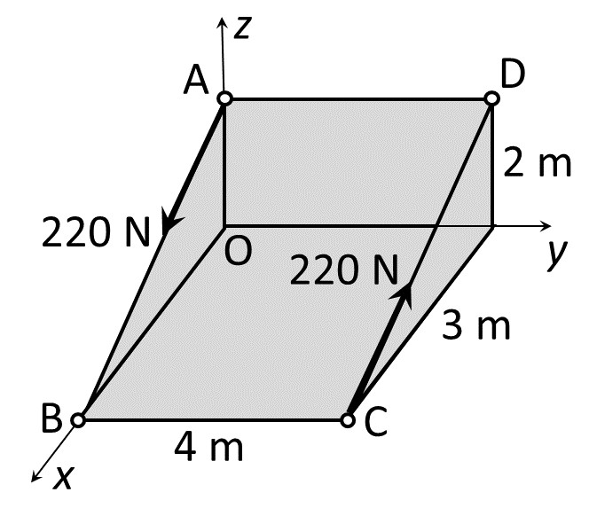

2026/10/8／第3回「3次元の力とモーメント」の Moodle 小テスト（課題 3A〔必修〕全3問＋課題 3B〔任意〕全3問）。各問を、教材の解き方の手順①〜⑥（教材 7.1節の3次元版）で解き直したもの。
ある物体内の3点 A(4, 3, 2), B(−1, 2, 5), P(5, 7, 0) を考える（長さの単位はメートルとする）。点 P に力 $\boldsymbol F=\begin{bmatrix}20\\15\\25\end{bmatrix}$ N が作用しているとき、以下の問いに答えなさい。
(a) 力 $\boldsymbol F$ の大きさを求めなさい。
(b) 力 $\boldsymbol F$ による、原点 O まわりのモーメントベクトル $\boldsymbol M_O$ を求めなさい。
(c) 力 $\boldsymbol F$ による、点 A まわりのモーメントベクトル $\boldsymbol M_A$ を求めなさい。
(d) 力 $\boldsymbol F$ による、軸 AB まわりのモーメントの大きさを求めなさい。
解答欄：(a) $F$ [N]、(b)(c) $[\ \square\ \ \square\ \ \square\ ]^{\mathsf T}$ Nm、(d) 大きさ [Nm]（A から B へ右ねじが進むときのねじの回転方向を正として、符号つきで入力）。
解答
① 切り出す：力は1本（着力点 P）。基準は (b) 点 O、(c) 点 A、(d) 軸 AB。
② 座標軸：問題の $x,y,z$（右手系）をそのまま使う。
③ 成分で書く：$\boldsymbol F=(20,\ 15,\ 25)$ N。位置ベクトルは「基準点 → 着力点」で、
・O まわり：$\boldsymbol r_{OP}=(5,\ 7,\ 0)$ m
・A まわり：$\boldsymbol r_{AP}=\mathrm P-\mathrm A=(5-4,\ 7-3,\ 0-2)=(1,\ 4,\ -2)$ m
(a) 大きさ：3次元の三平方の定理（教材 1.2節）で $$F=\sqrt{F_x^2+F_y^2+F_z^2}=\sqrt{20^2+15^2+25^2}=\sqrt{400+225+625}=\sqrt{1250}=25\sqrt2=35.36\ \mathrm N$$
(b) O まわり：④ 式 (2.54) $\boldsymbol M=\begin{bmatrix}F_zr_y-F_yr_z\\F_xr_z-F_zr_x\\F_yr_x-F_xr_y\end{bmatrix}$ に、$\boldsymbol r=(5,7,0)$、$\boldsymbol F=(20,15,25)$ を入れる。⑤ 成分ごとに1行ずつ：
・$x$ 成分：$F_zr_y-F_yr_z=25\times7-15\times0=175-0=175$
・$y$ 成分：$F_xr_z-F_zr_x=20\times0-25\times5=0-125=-125$
・$z$ 成分：$F_yr_x-F_xr_y=15\times5-20\times7=75-140=-65$
$$\boldsymbol M_O=[\,175\ \ -125\ \ -65\,]^{\mathsf T}\ \mathrm{Nm}$$
（覚え方：$x$ 成分は「$y$ と $z$ のたすき掛け」、$y$ 成分は「$z$ と $x$」、$z$ 成分は「$x$ と $y$」。$x\to y\to z\to x$ と巡回させると、前に来るほうの文字が $F$ 側につく。$z$ 成分は第2回の2次元の式 $F_yr_x-F_xr_y$ そのものである。）
(c) A まわり：④ 同じ式に $\boldsymbol r_{AP}=(1,4,-2)$ を入れる。⑤
・$x$：$F_zr_y-F_yr_z=25\times4-15\times(-2)=100+30=130$
・$y$：$F_xr_z-F_zr_x=20\times(-2)-25\times1=-40-25=-65$
・$z$：$F_yr_x-F_xr_y=15\times1-20\times4=15-80=-65$
$$\boldsymbol M_A=[\,130\ \ -65\ \ -65\,]^{\mathsf T}\ \mathrm{Nm}$$
⑥ 確かめ（基準点を移す式 6.1）：$\boldsymbol M_A=\boldsymbol M_O+\overrightarrow{\mathrm{AO}}\times\boldsymbol F$ で、$\overrightarrow{\mathrm{AO}}=(-4,-3,-2)$。
$$\begin{aligned}\overrightarrow{\mathrm{AO}}\times\boldsymbol F&=\big(25(-3)-15(-2),\ 20(-2)-25(-4),\ 15(-4)-20(-3)\big)\\&=(-75+30,\ -40+100,\ -60+60)=(-45,\ 60,\ 0)\\ \boldsymbol M_O+(-45,\ 60,\ 0)&=(175-45,\ -125+60,\ -65+0)=(130,\ -65,\ -65)\end{aligned}$$
で一致する。
(d) 軸 AB まわり：④ 軸上の点 A まわりの $\boldsymbol M_A$ を、軸の単位ベクトル $\boldsymbol u$ に射影する（式 2.60）。
（なぜ A を使うか：軸まわりのモーメントは、軸上の点まわりのモーメントから作る。軸上の点ならどれでも同じ値になる（教材 5.3節）。A は (c) で計算済みなので使い回せる。）
・軸の向き：問題が「A から B へ右ねじが進む向きを正」と指定しているので、$\overrightarrow{\mathrm{AB}}=\mathrm B-\mathrm A=(-1-4,\ 2-3,\ 5-2)=(-5,\ -1,\ 3)$ m。
・長さ：$|\overrightarrow{\mathrm{AB}}|=\sqrt{25+1+9}=\sqrt{35}=5.916$ m。
・単位ベクトル：$\boldsymbol u=\dfrac{1}{\sqrt{35}}(-5,\ -1,\ 3)$。
⑤ 内積を計算する： $$\tau_{AB}=\boldsymbol u\cdot\boldsymbol M_A=\frac{(-5)(130)+(-1)(-65)+(3)(-65)}{\sqrt{35}}=\frac{-650+65-195}{\sqrt{35}}=\frac{-780}{5.916}=-131.8\ \mathrm{Nm}$$
⑥ 確かめ：(i) 軸上のもう一つの点 B を基準にして $\boldsymbol u\cdot(\boldsymbol r_{BP}\times\boldsymbol F)$ を計算しても −131.8 になる（教材 5.3節の主張どおり）。(ii) 三重積の行列式（教材 5.6節）$\tau=\dfrac{1}{|\overrightarrow{\mathrm{AB}}|}\begin{vmatrix}-5&-1&3\\1&4&-2\\20&15&25\end{vmatrix}=\dfrac{-780}{\sqrt{35}}$ でも一致（Python で検算）。(iii) 単位は m × N = Nm。$|\tau|=131.8\le|\boldsymbol M_A|=\sqrt{130^2+65^2+65^2}=159.2$ で、射影が元のベクトルより大きくならないことも合っている。
答え：(a) 35.36 N（$25\sqrt2$） (b) $\boldsymbol M_O=[175\ \ -125\ \ -65]^{\mathsf T}$ Nm (c) $\boldsymbol M_A=[130\ \ -65\ \ -65]^{\mathsf T}$ Nm (d) −131.8 Nm（$-780/\sqrt{35}$）
3A-1 と同じ系を考える。すなわち、ある物体内の3点 A(4, 3, 2), B(−1, 2, 5), P(5, 7, 0) の、点 P に力 $\boldsymbol F=\begin{bmatrix}20\\15\\25\end{bmatrix}$ N が作用している。この物体に、さらに純粋モーメント $\boldsymbol M=\begin{bmatrix}122\\165\\80\end{bmatrix}$ Nm を加えたとき、以下の問いに答えなさい。
(a) 原点 O まわりに作用するモーメントベクトル $\boldsymbol M_{O'}$ を求めなさい。
(b) $z$ 軸まわりに作用するモーメントベクトル $\boldsymbol M_z$ を求めなさい。
(c) 軸 AB まわりに作用するモーメントの大きさを求めなさい。
解答欄：(a)(b) $[\ \square\ \ \square\ \ \square\ ]^{\mathsf T}$ Nm、(c) 大きさ [Nm]（A から B へ右ねじが進む向きを正として符号つき）。問題文の「原点 O まわりのに作用する」は、「原点 O まわりに作用する」の誤植と思われる。
解答
① 切り出す：物体に働くのは、P の力 $\boldsymbol F$ と純粋モーメント $\boldsymbol M$ の2つ。
② 座標軸：3A-1 と同じ。
③ 成分：3A-1 の結果 $\boldsymbol M_O=(175,-125,-65)$、$\boldsymbol M_A=(130,-65,-65)$ をそのまま使う。
④ 式を立てる：合モーメントの式 (2.59) $\boldsymbol M=\sum\boldsymbol r_i\times\boldsymbol F_i+\sum\boldsymbol M_j$。純粋モーメントは腕を掛けず、そのまま足す（3次元の偶力のモーメントは基準点によらない、教材 6.1節）。
(a) ⑤ 成分ごとに足す： $$\boldsymbol M_{O'}=\boldsymbol M_O+\boldsymbol M=(175+122,\ -125+165,\ -65+80)=[\,297\ \ 40\ \ 15\,]^{\mathsf T}\ \mathrm{Nm}$$
(b) $z$ 軸は原点 O を通り、単位ベクトルは $\boldsymbol k=(0,0,1)$。軸まわりのモーメントの大きさは $\tau_z=\boldsymbol k\cdot\boldsymbol M_{O'}=15$ Nm（$\boldsymbol M_{O'}$ の $z$ 成分そのもの。教材 2.3節「成分は各軸まわりのモーメント」）。これをベクトルとして書くと、軸の向き $\boldsymbol k$ を掛けて $$\boldsymbol M_z=\tau_z\,\boldsymbol k=[\,0\ \ 0\ \ 15\,]^{\mathsf T}\ \mathrm{Nm}$$
(c) 軸上の点 A まわりの合モーメントは $\boldsymbol M_{A'}=\boldsymbol M_A+\boldsymbol M=(130+122,\ -65+165,\ -65+80)=(252,\ 100,\ 15)$。これを $\boldsymbol u=(-5,-1,3)/\sqrt{35}$ に射影する： $$\tau_{AB}=\frac{(-5)(252)+(-1)(100)+(3)(15)}{\sqrt{35}}=\frac{-1260-100+45}{\sqrt{35}}=\frac{-1315}{5.916}=-222.3\ \mathrm{Nm}$$
⑥ 確かめ（分けて足す）：内積は足し算に分配できるので、$\tau_{AB}=\boldsymbol u\cdot\boldsymbol M_A+\boldsymbol u\cdot\boldsymbol M$。前半は 3A-1(d) の $-131.8$、後半は $\dfrac{(-5)(122)+(-1)(165)+(3)(80)}{\sqrt{35}}=\dfrac{-610-165+240}{\sqrt{35}}=\dfrac{-535}{\sqrt{35}}=-90.43$。和は $-131.84-90.43=-222.3$ で一致する。
答え：(a) $\boldsymbol M_{O'}=[297\ \ 40\ \ 15]^{\mathsf T}$ Nm (b) $\boldsymbol M_z=[0\ \ 0\ \ 15]^{\mathsf T}$ Nm (c) −222.3 Nm（$-1315/\sqrt{35}$）
Replace the three forces by a single resultant force at the point O and a moment. Then, solve the same problem at the point A.
（訳：3つの力を、点 O における1つの合力とモーメントに置き換えよ。次に、点 A について同じ問題を解け。）解答欄：O点・A点それぞれの合力 $\square\,\boldsymbol i+\square\,\boldsymbol j+\square\,\boldsymbol k$ (N)、合モーメント $\square\,\boldsymbol i+\square\,\boldsymbol j+\square\,\boldsymbol k$ (Nm)。

図の読み取り（本解説の前提）：
・O は原点。$y$ 軸は O から A への棒に沿い、$\mathrm A=(0,\ 2,\ 0)$ m。
・A から 1 m の棒は、図で $x$ 軸（左下へ向かう矢印）と平行に左下へ伸びているので、$+x$ 向き。先端を C とすると $\mathrm C=(1,\ 2,\ 0)$ m。
・80 N：A で棒の延長方向（右）＝ $+y$ 向き。$\boldsymbol F_1=(0,\ 80,\ 0)$。
・50 N：A で右上へ。図の $x$ 軸の矢印と平行で逆向きなので $-x$ 向き。$\boldsymbol F_2=(-50,\ 0,\ 0)$。
・100 N：C で真下＝ $-z$ 向き。$\boldsymbol F_3=(0,\ 0,\ -100)$。
解答
① 切り出す：L字の棒全体。3本の力を点 O（次に点 A）に集める（式 2.58・2.59）。
② 座標軸：図の $x,y,z$（右手系：$\boldsymbol i\times\boldsymbol j=\boldsymbol k$ で、$x$ 手前・$y$ 右・$z$ 上）。
③ 成分で書く：上の読み取りのとおり。
④ 式を立てる： $$\boldsymbol F_R=\boldsymbol F_1+\boldsymbol F_2+\boldsymbol F_3,\qquad \boldsymbol M_O=\boldsymbol r_A\times\boldsymbol F_1+\boldsymbol r_A\times\boldsymbol F_2+\boldsymbol r_C\times\boldsymbol F_3$$
⑤ 解く（O 点）：
・合力：$\boldsymbol F_R=(0-50+0,\ 80+0+0,\ 0+0-100)=(-50,\ 80,\ -100)$ N。
| 力 | $\boldsymbol r$（O → 着力点）[m] | $\boldsymbol F$ [N] | $\boldsymbol r\times\boldsymbol F$ [Nm]（式 2.54） |
|---|---|---|---|
| 80 N | (0, 2, 0) | (0, 80, 0) | $(0,\ 0,\ 0)$ $\boldsymbol r\parallel\boldsymbol F$ |
| 50 N | (0, 2, 0) | (−50, 0, 0) | $z$：$0\cdot0-(-50)\cdot2=100$、他は 0 $=(0,\ 0,\ 100)$ |
| 100 N | (1, 2, 0) | (0, 0, −100) | $x$：$(-100)\cdot2-0\cdot0=-200$ $y$：$0\cdot0-(-100)\cdot1=100$ $z$：$0\cdot1-0\cdot2=0$ |
| 合計 | (−50, 80, −100) | (−200, 100, 100) |
⑤′ A 点：A から見た着力点は、80 N と 50 N が $\boldsymbol r=\boldsymbol 0$（A そのもの）、100 N が $\overrightarrow{\mathrm{AC}}=(1,\ 0,\ 0)$。
・80 N・50 N：腕が $\boldsymbol 0$ なのでモーメント 0。
・100 N：$$(1,0,0)\times(0,0,-100)=\big(0\cdot0-(-100)\cdot0,\ 0\cdot0-(-100)\cdot1,\ 0\cdot0-0\cdot1\big)=(0,\ 100,\ 0)$$
・合力は基準点によらず同じ $(-50,\ 80,\ -100)$ N。
⑥ 確かめ：(i) 基準点を移す式 (6.1)：$\boldsymbol M_A=\boldsymbol M_O+\overrightarrow{\mathrm{AO}}\times\boldsymbol F_R$、$\overrightarrow{\mathrm{AO}}=(0,-2,0)$。$$\begin{aligned}(0,-2,0)\times(-50,80,-100)&=\big((-100)(-2)-80\cdot0,\ (-50)\cdot0-(-100)\cdot0,\ 80\cdot0-(-50)(-2)\big)\\&=(200,\ 0,\ -100)\\ \boldsymbol M_O+(200,\ 0,\ -100)&=(-200+200,\ 100+0,\ 100-100)=(0,\ 100,\ 0)\end{aligned}$$
で一致する。
(ii) 図の感覚：100 N の重りは O から見て $y$ 方向に 2 m、$x$ 方向に 1 m 離れて下向きに引くので、$x$ 軸まわりに $-200$（$y$ 方向の腕 2 m）、$y$ 軸まわりに $+100$（$x$ 方向の腕 1 m）。50 N は A を $-x$ へ押し、$z$ 軸まわりに $+100$（腕 2 m）。80 N は作用線が $y$ 軸そのものなので O を通り、0。各軸まわりの値が各成分になっている（教材 2.3節）。
答え：O 点 合力 $-50\boldsymbol i+80\boldsymbol j-100\boldsymbol k$ N、合モーメント $-200\boldsymbol i+100\boldsymbol j+100\boldsymbol k$ Nm
A 点 合力 $-50\boldsymbol i+80\boldsymbol j-100\boldsymbol k$ N、合モーメント $0\boldsymbol i+100\boldsymbol j+0\boldsymbol k$ Nm
課題 3A の続き（3B-1・3B-2・3B-4 の全3問。Moodle の画面に 3B-3 は無い）。3A と同じ道具で、力の向きを「2点を結ぶ線」から作る作業（教材 1.2節の単位ベクトル）と、3次元の偶力（教材 6.1節）が加わる。
Two forces $\boldsymbol F_1=20\boldsymbol i-10\boldsymbol j+60\boldsymbol k$ N and $\boldsymbol F_2=30\boldsymbol i+20\boldsymbol j-40\boldsymbol k$ N are acting at $(0,-1,1)$ and $(-1,-1,-1)$, respectively, and a pure moment of −80 Nm is acting in the $xy$-plane. Determine the resultant force-moment system at the origin. Coordinates are in meters.
（訳：2つの力 $\boldsymbol F_1$、$\boldsymbol F_2$ がそれぞれ点 $(0,-1,1)$、$(-1,-1,-1)$ に働き、さらに $xy$ 平面内で −80 Nm の純粋モーメントが働く。原点における合力と合モーメントを求めよ。座標の単位は m。）解答欄：合力・合モーメントとも $\square\,\boldsymbol i+\square\,\boldsymbol j+\square\,\boldsymbol k$。
解答
① 切り出す：2本の力と1つの純粋モーメントを、原点 O に集める（式 2.58・2.59）。
② 座標軸：問題の $x,y,z$（右手系）。
③ 成分で書く：$\boldsymbol r_1=(0,-1,1)$、$\boldsymbol F_1=(20,-10,60)$；$\boldsymbol r_2=(-1,-1,-1)$、$\boldsymbol F_2=(30,20,-40)$。
純粋モーメントは「$xy$ 平面内で回す」もの。$xy$ 平面内の回転の軸は $z$ 軸なので、ベクトルは $z$ 方向：$\boldsymbol M_0=-80\boldsymbol k=(0,\ 0,\ -80)$ Nm（教材 2.2節：モーメントベクトルは回転面に垂直）。
④ 式を立てる： $$\boldsymbol F_R=\boldsymbol F_1+\boldsymbol F_2,\qquad \boldsymbol M_O=\boldsymbol r_1\times\boldsymbol F_1+\boldsymbol r_2\times\boldsymbol F_2+\boldsymbol M_0$$
⑤ 解く：
・合力：$\boldsymbol F_R=(20+30,\ -10+20,\ 60-40)=(50,\ 10,\ 20)$ N。
・$\boldsymbol r_1\times\boldsymbol F_1$（式 2.54）：
$x$：$F_zr_y-F_yr_z=60(-1)-(-10)(1)=-60+10=-50$
$y$：$F_xr_z-F_zr_x=20(1)-60(0)=20$
$z$：$F_yr_x-F_xr_y=(-10)(0)-20(-1)=20$ → $(-50,\ 20,\ 20)$
・$\boldsymbol r_2\times\boldsymbol F_2$：
$x$：$(-40)(-1)-20(-1)=40+20=60$
$y$：$30(-1)-(-40)(-1)=-30-40=-70$
$z$：$20(-1)-30(-1)=-20+30=10$ → $(60,\ -70,\ 10)$
・合計：
$$\boldsymbol M_O=(-50+60+0,\ 20-70+0,\ 20+10-80)=(10,\ -50,\ -50)\ \mathrm{Nm}$$
⑥ 確かめ：外積は両方のベクトルに垂直になる（教材 3.3節）ので、$(\boldsymbol r_1\times\boldsymbol F_1)\cdot\boldsymbol F_1=(-50)(20)+(20)(-10)+(20)(60)=-1000-200+1200=0$、$(\boldsymbol r_2\times\boldsymbol F_2)\cdot\boldsymbol F_2=(60)(30)+(-70)(20)+(10)(-40)=1800-1400-400=0$ で、どちらも 0。計算ミスがあるとたいていここで 0 にならない。単位は N と Nm。
答え：合力 $50\boldsymbol i+10\boldsymbol j+20\boldsymbol k$ N、合モーメント $10\boldsymbol i-50\boldsymbol j-50\boldsymbol k$ Nm
Determine the resultant force and moment of the three forces at the point O. Coordinates are in meters.
（訳：3つの力の、点 O における合力と合モーメントを求めよ。座標の単位は m。）解答欄：合力・合モーメントとも $\square\,\boldsymbol i+\square\,\boldsymbol j+\square\,\boldsymbol k$。

図の読み取り（本解説の前提）：2000 N は O から $+x$ 向き、3000 N は O から $+y$ 向き（どちらも着力点は O）。1000 N は点 Q(0, 6, 4) に働き、点 E(−6, 10, 6) へ向かう（破線がその延長）。
解答
① 切り出す：3本の力を点 O に集める。
② 座標軸：図の $x,y,z$。
③ 成分で書く：1000 N の向きは $\overrightarrow{\mathrm{QE}}$ で決まる（教材 1.2節：大きさ × 単位ベクトル）。
・$\overrightarrow{\mathrm{QE}}=\mathrm E-\mathrm Q=(-6-0,\ 10-6,\ 6-4)=(-6,\ 4,\ 2)$ m
・長さ：$|\overrightarrow{\mathrm{QE}}|=\sqrt{36+16+4}=\sqrt{56}=7.483$ m
・$\boldsymbol F_3=1000\times\dfrac{(-6,\ 4,\ 2)}{\sqrt{56}}=133.6\times(-6,\ 4,\ 2)=(-801.8,\ 534.5,\ 267.3)$ N
・$\boldsymbol F_1=(2000,\ 0,\ 0)$、$\boldsymbol F_2=(0,\ 3000,\ 0)$（着力点 O）
④ 式を立てる： $$\boldsymbol F_R=\boldsymbol F_1+\boldsymbol F_2+\boldsymbol F_3,\qquad \boldsymbol M_O=\boldsymbol 0\times\boldsymbol F_1+\boldsymbol 0\times\boldsymbol F_2+\overrightarrow{\mathrm{OQ}}\times\boldsymbol F_3$$ 2000 N と 3000 N は O に働くので腕が $\boldsymbol 0$、モーメントは 0。
⑤ 解く：
・合力：$\boldsymbol F_R=(2000-801.8,\ 3000+534.5,\ 0+267.3)=(1198,\ 3535,\ 267.3)$ N。
・モーメント：係数 $c=1000/\sqrt{56}=133.6$ を外に出し、整数のまま外積を計算する（数値の丸めを最後の1回にするため）。$(0,6,4)\times(-6,4,2)$ は
$x$：$2\times6-4\times4=12-16=-4$
$y$：$(-6)\times4-2\times0=-24$
$z$：$4\times0-(-6)\times6=36$
$$\boldsymbol M_O=c\,(-4,\ -24,\ 36)=(-534.5,\ -3207,\ 4811)\ \mathrm{Nm}$$
⑥ 確かめ：(i) 着力点を作用線上の別の点 E に取り直しても、$\overrightarrow{\mathrm{OE}}\times\boldsymbol F_3$ は同じ値になる（教材 4.3節：作用線上で力を滑らせてもモーメントは変わらない。Python で検算）。(ii) $|\boldsymbol F_3|=133.6\times\sqrt{56}=1000$ N に戻る。(iii) $(-4,-24,36)\cdot(-6,4,2)=24-96+72=0$ で、モーメントは $\boldsymbol F_3$ に垂直。
答え：合力 $1198\boldsymbol i+3535\boldsymbol j+267.3\boldsymbol k$ N（1198.2, 3534.5, 267.26）、合モーメント $-534.5\boldsymbol i-3207\boldsymbol j+4811\boldsymbol k$ Nm（−534.52, −3207.1, 4810.7）
Determine the moments of the two forces shown in the figure about the $x$, $y$ and $z$ axis.
（訳：図の2つの力の、$x$ 軸・$y$ 軸・$z$ 軸まわりのモーメントを求めよ。）解答欄：$x$ 軸まわり・$y$ 軸まわり・$z$ 軸まわり（各 Nm）。

図の読み取り（本解説の前提）：直方体の寸法は $x$ 方向 3 m、$y$ 方向 4 m、高さ 2 m。各点の座標は
$\mathrm A=(0,\ 0,\ 2)$、$\mathrm B=(3,\ 0,\ 0)$、$\mathrm C=(3,\ 4,\ 0)$、$\mathrm D=(0,\ 4,\ 2)$ m。
一方の 220 N は辺 AB に沿って A → B 向き（矢印が B 側へ下る）、もう一方は CD に沿って C → D 向き（矢印が D 側へ上る）。
解答
① 切り出す：2本の力。基準は $x$・$y$・$z$ 軸で、3本とも原点 O を通る。
② 座標軸：図の $x,y,z$。
③ 成分で書く：
・$\overrightarrow{\mathrm{AB}}=(3,\ 0,\ -2)$、長さ $\sqrt{9+0+4}=\sqrt{13}=3.606$ m。
・$\overrightarrow{\mathrm{CD}}=(0-3,\ 4-4,\ 2-0)=(-3,\ 0,\ 2)$、長さも $\sqrt{13}$。
・係数 $f=220/\sqrt{13}=61.02$ N/m として
$$\boldsymbol F_{AB}=f\,(3,\ 0,\ -2)=(183.1,\ 0,\ -122.0),\qquad \boldsymbol F_{CD}=f\,(-3,\ 0,\ 2)=(-183.1,\ 0,\ 122.0)\ \mathrm N$$
④ 式を立てる：3本の軸はどれも O を通るので、まず O まわりのモーメント $\boldsymbol M_O$ を出し、各軸の単位ベクトル $\boldsymbol i,\boldsymbol j,\boldsymbol k$ との内積をとる（式 2.60）。$\boldsymbol i\cdot\boldsymbol M_O=M_{Ox}$ なので、各軸まわりのモーメント＝$\boldsymbol M_O$ の各成分（教材 2.3節）。 $$\boldsymbol M_O=\overrightarrow{\mathrm{OA}}\times\boldsymbol F_{AB}+\overrightarrow{\mathrm{OC}}\times\boldsymbol F_{CD}$$
⑤ 解く（$f$ を外に出して整数で計算）：
・$(0,0,2)\times(3,0,-2)$：$x$：$(-2)(0)-0\cdot2=0$、$y$：$3\cdot2-(-2)\cdot0=6$、$z$：$0\cdot0-3\cdot0=0$ → $(0,\ 6,\ 0)$
・$(3,4,0)\times(-3,0,2)$：$x$：$2\cdot4-0\cdot0=8$、$y$：$(-3)\cdot0-2\cdot3=-6$、$z$：$0\cdot3-(-3)\cdot4=12$ → $(8,\ -6,\ 12)$
$$\boldsymbol M_O=f\,(0+8,\ 6-6,\ 0+12)=61.02\times(8,\ 0,\ 12)=(488.1,\ 0,\ 732.2)\ \mathrm{Nm}$$
⑥ 確かめ（偶力として見る）：2本は大きさが等しく向きが逆（$\boldsymbol F_{CD}=-\boldsymbol F_{AB}$）で、作用線 AB と CD は平行なので偶力である（教材 6.1節）。偶力のモーメントは基準点によらず、一方の作用線からもう一方の作用線へのベクトル（例えば $\overrightarrow{\mathrm{AD}}=(0,4,0)$）を使って $$\overrightarrow{\mathrm{AD}}\times\boldsymbol F_{CD}=f\,(0,4,0)\times(-3,0,2)=f\,\big(2\cdot4-0,\ 0-2\cdot0,\ 0-(-3)\cdot4\big)=f\,(8,\ 0,\ 12)$$ で一致する。合力は $\boldsymbol 0$。大きさは $f\sqrt{64+144}=61.02\times14.42=880$ N·m で、これは「力 220 N × 2本の作用線の間隔 4 m」に等しい（AD は両方の作用線に垂直なので、間隔そのもの）。
答え：$x$ 軸まわり 488.1 Nm（$1760/\sqrt{13}$）、$y$ 軸まわり 0 Nm、$z$ 軸まわり 732.2 Nm（$2640/\sqrt{13}$）